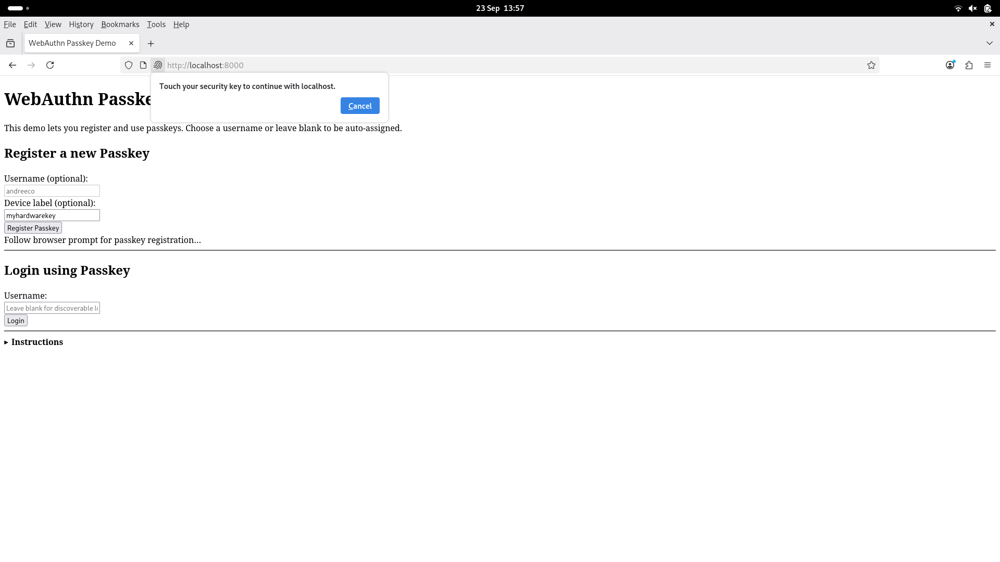

WebAuthn.jl
WebAuthn.jl brings passkey and FIDO2/WebAuthn authentication to Julia web servers. It provides end-to-end functions for registration and login, CBOR/COSE key parsing, challenge signing, signature verification, and PEM export.
This code is experimental. All cryptographic validation is enforced by OpenSSL or Sodium for safety. Please do not use in production without a full security review.
Features
- CBOR/COSE key parsing (P-256, RSA, Ed25519)
- Base64url encode/decode & random challenge generator
- Registration and authentication options utilities
- Secure signature and challenge verification
- PEM export of public keys
Getting Started
- Install this package:
] add WebAuthn - Import into your Julia session:
using WebAuthn - For Demo Server Example below:
] add HTTP, Sockets, JSON3, WebAuthn, Random, CBOR
How WebAuthn Works
WebAuthn enables passwordless, phishing-resistant authentication using public-key cryptography. A passkey (credential) is generated and stored securely on the user device; private keys never leave the device.
Registration Workflow

Server generates options:
registration_options— builds challenge and metadata for browser.Client creates credential: Browser and authenticator generate a new passkey on the device.
Authenticator returns attestation: Browser returns
attestationObjectandclientDataJSONto your server.Server verifies registration:
- Parse:
parse_attestation_object,parse_clientdata_json - Check challenge:
verify_challenge - Extract public key:
extract_credential_public_key,cose_key_parse - (Optional) Validate attestation:
verify_attestation_object - Store credential ID & public key for future logins.
- Parse:
For a simpler, secure approach, call verify_registration_response to run all checks at once!
Authentication Workflow

Server generates assertion options:
authentication_optionsClient signs with passkey: Browser prompts user; authenticator signs challenge.
Authenticator returns assertion: Server receives: authenticator data, clientDataJSON, signature.
Server verifies signature:
- Parse:
parse_assertion,parse_clientdata_json - Verify challenge:
verify_challenge - Signature check:
verify_webauthn_signature - (Optional) Enforce signCount, user presence, user verification
- Parse:
Or use verify_authentication_response for the recommended unified approach.
Core Functions by Flow
| Phase | Step | WebAuthn.jl Functions |
|---|---|---|
| Registration | Build options | registration_options |
| Parse & verify | verify_registration_response or parse_attestation_object, parse_clientdata_json, verify_challenge, extract_credential_public_key, cose_key_parse, verify_attestation_object | |
| Authentication | Build options | authentication_options |
| Parse & verify | verify_authentication_response or parse_assertion, parse_clientdata_json, verify_challenge, verify_webauthn_signature |
See also: cose_key_to_pem for PEM export/interoperation.
Tips
- All crypto uses OpenSSL_jll and Sodium.jl.
- Always verify the challenge and client origin in every response.
- Check signCount to stop replay or clone attacks.
- For user presence/verification, check flags in authenticator data (see FIDO2 spec).
Demo Server Example
Below is a reference implementation of a simple web server. It serves HTML/JS assets, builds and verifies WebAuthn flows, and manages user passkeys in memory.
Demo screenshots:
 
How to Test WebAuthn with a Security Key or Phone
With hardware key: Insert device, use when prompted.
With smartphone (virtual security key):
- Enable Bluetooth on computer and phone and connect them
- Visit demo site in Chrome; choose "Use phone" when prompted
- Scan QR code on screen and follow prompts on your phone
Full Example Server High Level
After installing the dependencies, you can copy-paste this code.
using HTTP, Sockets, JSON3, WebAuthn, Random, CBOR
const USERS = Dict{String,Dict{Symbol,Any}}()
const CREDENTIALS = Dict{String,Dict{Symbol,Any}}()
router = HTTP.Router()
function serve_login_success(req)
params = HTTP.queryparams(req)
username = get(params, "username", "")
html = replace(WebAuthn.asset("login_success.html"),
"{{USERNAME}}" => HTTP.escapehtml(username))
return HTTP.Response(200, ["Content-Type" => "text/html"], html)
end
HTTP.register!(router, "GET", "/login_success", serve_login_success)
function serve_index(req)
HTTP.Response(200, ["Content-Type" => "text/html"],
WebAuthn.asset("index.html"))
end
HTTP.register!(router, "GET", "/", serve_index)
function serve_webauthn_register_js(req)
HTTP.Response(200, ["Content-Type" => "application/javascript"],
WebAuthn.asset("webauthn_register.js"))
end
HTTP.register!(router, "GET", "/webauthn_register.js",
serve_webauthn_register_js)
function serve_webauthn_login_js(req)
HTTP.Response(200, ["Content-Type" => "application/javascript"],
WebAuthn.asset("webauthn_login.js"))
end
HTTP.register!(router, "GET", "/webauthn_login.js", serve_webauthn_login_js)
function serve_regoptions(req)
q = HTTP.queryparams(req)
username = get(q, "username", "")
if isempty(username)
charset = vcat('A':'Z', 'a':'z', '0':'9')
username = join(rand(charset, 8))
end
opts = WebAuthn.registration_options(
"localhost", "Passkey Demo", username, username,
username; exclude_ids=[]
)
USERS[username] = Dict(:challenge => opts["challenge"])
return HTTP.Response(200, ["Content-Type" => "application/json"],
JSON3.write(merge(opts, Dict("username" => username))))
end
HTTP.register!(router, "GET", "/webauthn/options/register", serve_regoptions)
function serve_regfinish(req)
payload = JSON3.read(String(req.body), Dict{String,Any})
username = get(payload, "username", "")
if isempty(username)
return HTTP.Response(400, ["Content-Type" => "text/plain"],
"Missing username")
end
chal = get(get(USERS, username, Dict{Symbol,Any}()), :challenge, nothing)
if chal === nothing
return HTTP.Response(400, ["Content-Type" => "text/plain"],
"No challenge for username.")
end
reg_result = verify_registration_response(
payload;
expected_challenge=chal,
expected_origin="http://localhost:8000"
)
if !reg_result.ok
return HTTP.Response(400, ["Content-Type" => "text/plain"],
"Registration failed: $(reg_result.reason)")
end
pkbytes = extract_credential_public_key(
parse_attestation_object(
payload["response"]["attestationObject"])["authData"]
)
CREDENTIALS[reg_result.credential_id] = Dict(
:public_key_cose => WebAuthn.base64urlencode(pkbytes),
:sign_count => 0,
:username => username
)
return HTTP.Response(200, ["Content-Type" => "application/json"],
JSON3.write(Dict("ok" => true, "username" => username)))
end
HTTP.register!(router, "POST", "/webauthn/register", serve_regfinish)
function serve_loginoptions(req)
q = HTTP.queryparams(req)
username = get(q, "username", "")
allow_ids = String[]
if !isempty(username)
allow_ids = [cid for (cid, c) in CREDENTIALS if get(
c, :username, "") == username]
if isempty(allow_ids)
allow_ids = String[]
end
else
allow_ids = collect(keys(CREDENTIALS))
end
opts = WebAuthn.authentication_options("localhost",
allow_credential_ids=allow_ids)
for cid in allow_ids
CREDENTIALS[cid][:challenge] = opts["challenge"]
end
return HTTP.Response(200, ["Content-Type" => "application/json"],
JSON3.write(merge(opts, Dict("username" => username))))
end
HTTP.register!(router, "GET", "/webauthn/options/login",
serve_loginoptions)
function serve_loginfinish(req)
payload = JSON3.read(String(req.body), Dict{String,Any})
credid = payload["id"]
if !haskey(CREDENTIALS, credid)
return HTTP.Response(403, ["Content-Type" => "text/plain"],
"Unknown credential")
end
cred = CREDENTIALS[credid]
chal = get(cred, :challenge, nothing)
if chal === nothing
return HTTP.Response(400, ["Content-Type" => "text/plain"],
"No challenge issued for this credential")
end
pubkey_cose_bytes = WebAuthn.base64urldecode(cred[:public_key_cose])
pubkey_dict = CBOR.decode(pubkey_cose_bytes)
pubkey = WebAuthn.cose_key_parse(pubkey_dict)
authn_result = verify_authentication_response(
payload;
public_key=pubkey,
expected_challenge=chal,
expected_origin="http://localhost:8000",
previous_signcount=cred[:sign_count],
require_uv=true
)
if !authn_result.ok
return HTTP.Response(403, ["Content-Type" => "text/plain"],
"Authentication failed: $(authn_result.reason)")
end
cred[:sign_count] = authn_result.new_signcount
return HTTP.Response(200, ["Content-Type" => "application/json"],
JSON3.write(Dict(
"ok" => true,
"username" => get(cred, :username, ""),
"redirect" => "/login_success?username=$(
get(cred, :username, ""))"
))
)
end
HTTP.register!(router, "POST", "/webauthn/login", serve_loginfinish)
srv = HTTP.serve!(router, Sockets.localhost, 8000)Full Example Server Low Level
After installing the dependencies, you can copy-paste this code.
using HTTP, Sockets, JSON3, WebAuthn, Random, CBOR
USERS = Dict{String,Dict{Symbol,Any}}()
CREDENTIALS = Dict{String,Dict{Symbol,Any}}()
router = HTTP.Router()
function serve_login_success(req)
params = HTTP.queryparams(req)
username = get(params, "username", "")
html = replace(WebAuthn.asset("login_success.html"),
"{{USERNAME}}" => HTTP.escapehtml(username))
return HTTP.Response(200, ["Content-Type" => "text/html"], html)
end
HTTP.register!(router, "GET", "/login_success", serve_login_success)
function serve_index(req)
HTTP.Response(200, ["Content-Type" => "text/html"],
WebAuthn.asset("index.html"))
end
HTTP.register!(router, "GET", "/", serve_index)
function serve_webauthn_register_js(req)
HTTP.Response(200, ["Content-Type" => "application/javascript"],
WebAuthn.asset("webauthn_register.js"))
end
HTTP.register!(router, "GET", "/webauthn_register.js",
serve_webauthn_register_js)
function serve_webauthn_login_js(req)
HTTP.Response(200, ["Content-Type" => "application/javascript"],
WebAuthn.asset("webauthn_login.js"))
end
HTTP.register!(router, "GET", "/webauthn_login.js", serve_webauthn_login_js)
function serve_regoptions(req)
q = HTTP.queryparams(req)
username = get(q, "username", "")
if isempty(username)
charset = vcat('A':'Z', 'a':'z', '0':'9')
username = join(rand(charset, 8))
end
opts = WebAuthn.registration_options(
"localhost", "Passkey Demo", username, username, username;
exclude_ids=[]
)
USERS[username] = Dict(:challenge => opts["challenge"])
return HTTP.Response(200, ["Content-Type" => "application/json"],
JSON3.write(merge(opts, Dict("username" => username))))
end
HTTP.register!(router, "GET", "/webauthn/options/register", serve_regoptions)
function serve_regfinish(req)
payload = JSON3.read(String(req.body))
username = get(payload, "username", "")
if isempty(username)
return HTTP.Response(400, ["Content-Type" => "text/plain"],
"Missing username")
end
chal = get(USERS[username], :challenge, nothing)
if chal === nothing
return HTTP.Response(400, ["Content-Type" => "text/plain"],
"No challenge for username.")
end
if !WebAuthn.verify_challenge(
payload["response"]["clientDataJSON"], chal)
return HTTP.Response(400, ["Content-Type" => "text/plain"],
"Challenge fail")
end
attobj = WebAuthn.parse_attestation_object(
payload["response"]["attestationObject"])
pkbytes = WebAuthn.extract_credential_public_key(attobj["authData"])
cred_id = payload["id"]
CREDENTIALS[cred_id] = Dict(
:public_key_cose => WebAuthn.base64urlencode(pkbytes),
:sign_count => 0,
:username => username
)
return HTTP.Response(200, ["Content-Type" => "application/json"],
JSON3.write(Dict("ok" => true, "username" => username)))
end
HTTP.register!(router, "POST", "/webauthn/register", serve_regfinish)
function serve_loginoptions(req)
q = HTTP.queryparams(req)
username = get(q, "username", "")
allow_ids = String[]
if !isempty(username)
allow_ids = [cid for (cid, c) in CREDENTIALS if get(
c, :username, "") == username]
if isempty(allow_ids)
allow_ids = String[]
end
else
allow_ids = collect(keys(CREDENTIALS))
end
opts = WebAuthn.authentication_options("localhost",
allow_credential_ids=allow_ids)
for cid in allow_ids
CREDENTIALS[cid][:challenge] = opts["challenge"]
end
return HTTP.Response(200, ["Content-Type" => "application/json"],
JSON3.write(merge(opts, Dict("username" => username))))
end
HTTP.register!(router, "GET", "/webauthn/options/login", serve_loginoptions)
function serve_loginfinish(req)
payload = JSON3.read(String(req.body))
credid = payload["id"]
if !haskey(CREDENTIALS, credid)
return HTTP.Response(403, ["Content-Type" => "text/plain"],
"Unknown credential")
end
cred = CREDENTIALS[credid]
chal = get(cred, :challenge, nothing)
if chal === nothing
return HTTP.Response(400, ["Content-Type" => "text/plain"],
"No challenge issued for this credential")
end
if !WebAuthn.verify_challenge(payload["response"]["clientDataJSON"], chal)
return HTTP.Response(400, ["Content-Type" => "text/plain"],
"Challenge fail")
end
pubkey = WebAuthn.cose_key_parse(
CBOR.decode(WebAuthn.base64urldecode(cred[:public_key_cose])))
ad = WebAuthn.base64urldecode(payload["response"]["authenticatorData"])
cdj = WebAuthn.base64urldecode(payload["response"]["clientDataJSON"])
sig = WebAuthn.base64urldecode(payload["response"]["signature"])
cdj_dict = WebAuthn.parse_clientdata_json(payload["response"]["clientDataJSON"])
ok = WebAuthn.verify_webauthn_signature(pubkey, ad, cdj, sig)
username = get(cred, :username, "")
if !ok
return HTTP.Response(403, ["Content-Type" => "text/plain"], "Bad signature")
end
verify_origin(cdj_dict, "http://localhost:8000")
old_signcount = cred[:sign_count]
new_signcount = reinterpret(UInt32, ad[34:37])[1]
enforce_signcount(old_signcount, new_signcount)
cred[:sign_count] = new_signcount
enforce_up_uv(ad; require_uv=false)
return HTTP.Response(200, ["Content-Type" => "application/json"],
JSON3.write(Dict("ok" => true, "username" => username,
"redirect" => "/login_success?username=$username"))
)
end
HTTP.register!(router, "POST", "/webauthn/login", serve_loginfinish)
srv = HTTP.serve!(router, Sockets.localhost, 8000)Contributions
Questions, issues, and PRs welcome! See WebAuthn.jl on GitHub.
License
Licensed under the MIT License. See LICENSE for details.